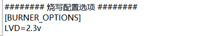
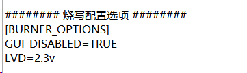
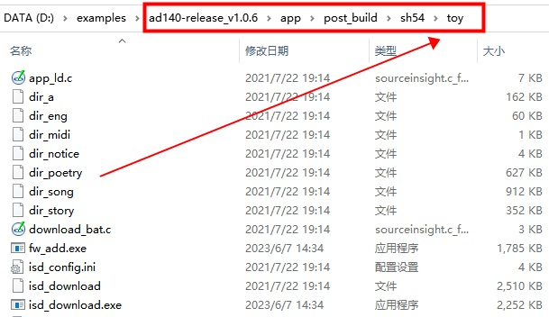
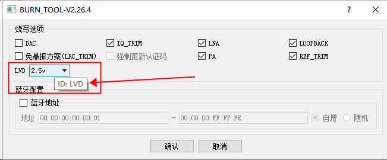

6.3. 如何在生成烧录文件时设置烧录选项
6.3.1. 如何修改 INI 指定烧录选项
要设置指定的烧录选项，可以在INI配置文件中设置指定的烧录选项值。
Note
下载目录的ISD_DOWNLOAD.EXE版本必须更新到4.0.17或之后版本。
打开SDK下载目录中的 isd_config.ini 文件，增加配置段[BURNER_OPTIONS]。
Important
注意：在一些 SDK 中，isd_config.ini 文件是通过 isd_config.c 预处理生成的。
如果直接改 isd_config.ini 后重新编译，可能会发现 isd_config.ini 又被改了回去。
请注意观察你当前使用的 SDK，是否是属于这种情况。如果发现确实出现了这种情况，则说明你需要去修改 isd_config.c。
为了表述方便，下文还是继续使用 isd_config.ini 文件作为例子。
根据实际需求，配置指定烧录选项的默认值。以LVD电压为例， 如下图：

如果不允许工厂烧录时修改设置的烧录选项值，可以在[BURNER_OPTIONS]段中增加设置项GUI_DISABLED=TRUE，如下图：

Note
对于较旧的 SDK，需要额外增加下面的步骤：（新的 SDK 只需要修改 isd_config.ini 即可）
AC690X，AC691X，AC692X SDK V1，AC61N，AC62N，AC64N，AC81N的SDK需要使用 fw_add.exe（1.0.15及之后版本） 将
isd_config.ini文件添加到fw文件中。命令示例如下:
fw_add.exe -fw <原始.fw> -out <修改后输出.fw> -add isd_config.ini -type 0x34
AC13N的SDK需要通过 bin_to_fw_v2.exe（2.0.8及之后版本） 的-ini参数将
isd_config.ini文件添加的FW文件中。命令示例如下：
bin_to_fw_v2.exe -flash <bin文件.bin> -key <key文件.key> -log info.log -chip AD13N -out <输出的文件.fw> -ini isd_config.ini
目前暂时不支持AC1X系列，AC3X系列芯片
6.3.2. 如何生成仅包含烧录选项和KEY的烧录文件（不包含FLASH 烧录信息）
Note
下载目录的ISD_DOWNLOAD.EXE版本必须更新到4.2.32或之后版本。
进入SDK下载目录。
执行命令
isd_download.exe isd_config.ini -package-only -dev <dev name> -key <your key file> -output-fw <output fw file>
以AD14N SDK v1.0.16为例的操作步骤如下：
进入SDK下载目录

确认SDK下载目录中
isd_download.exe版本为4.2.32版本或之后版本。如不是，那么双击运行目录中的下载目录工具更新.jlxproj更新isd_download.exe到最新版本。如果SDK下载目录中不存在下载目录工具更新.jlxproj， 请点击此处下载。在isd_config.ini中添加需要配置的烧录选项
通过命令行执行
isd_download.exe isd_config.ini -package-only -dev sh54 -key ad14n.lkey -output-fw jl_ini.fw,jl_ini.fw即为包含烧录选项和KEY的烧录文件。

Note
如不确定当前SDK-dev参数，可以打开SDK下载目录中download.bat查看。
请替换ad14n.lkey为您的KEY文件。
6.3.3. 能用 INI 配置的烧录选项有哪些
Note
每个芯片型号的支持的烧录选项和选项可选值以烧录器界面为准。配置项在INI中的配置项ID和配置值区分大小写。
一拖二烧录器从V2.26.5版本之后/一拖八烧录器从V3.1.11版本之后，选中配置项对话框后，将鼠标移动到配置项上可以直接查看配置项的ID。如下图：


当前支持的所有烧录选项如下：
烧录器界面配置项名字 |
在INI中的配置项ID |
可选值 |
说明 |
|---|---|---|---|
充电电流档位(mA) |
ac_channel |
80 ~ 360 |
以烧录器界面实际可选写值为准 |
模拟信号再校准 |
asr |
ON |
|
音频电源测试 |
AUDIO_POWER_TEST |
TRUE |
TRUE： 勾选该选项 |
样机带电池 |
BATTERY_SUPPLY |
TRUE |
TRUE： 勾选该选项 |
电池方案 |
BATTERY_TYPE |
LITHIUM |
LITHIUM对应选项值为：锂电池 |
BTPLL |
BTPLL |
TRUE |
TRUE： 勾选该选项 |
开关充电电流档位(mA) |
buck_ac_channel |
100 ~ 600 |
以烧录器界面实际可选写值为准 |
烧录电压挡位 |
BURN_VOLTAGE |
5.5v ~ 7.0v |
每个芯片型号烧录器界面实际可用值为准 |
充电检测（LDOIN需要5V供电） |
CHECK_LDOIN |
TRUE |
TRUE： 勾选该选项 |
校准查询 |
CHECK_TRIM |
TRUE |
TRUE： 勾选该选项 |
CHARGE_CURRENT |
CHRAGE_CURRENT |
20 ~ 40 |
以烧录器界面实际可填写值为准 |
电流测试 |
CURRENT_TEST |
TRUE |
TRUE： 勾选该选项 |
DAC |
DAC |
TRUE |
TRUE： 勾选该选项 |
DAC OS |
DAC_OS_TEST |
TRUE |
TRUE： 勾选该选项 |
DAC_TRIM_LEAKAGE |
DAC_TRIM_LEAKAGE |
0 ~ 65535 |
以烧录器界面实际可填写值为准 |
DACVDD |
DACVDD |
TRUE |
TRUE： 勾选该选项 |
未封装的芯片(DIE) |
DIE_CASE |
TRUE |
TRUE： 勾选该选项 |
烧录前擦除整个FLASH |
ERASE_FLASH |
TRUE |
TRUE： 勾选该选项 |
FM |
FM |
TRUE |
TRUE： 勾选该选项 |
频偏测试 |
FREQ_OFFSET_COR |
TRUE |
TRUE： 勾选该选项 |
校频波频点配置 |
FREQ_WAVE_POINT |
0 ~ 9 |
以烧录器界面实际可填写值为准 |
IQ_TRIM |
IQ_TRIM |
TRUE |
TRUE： 勾选该选项 |
LDOIN TEST |
LDOIN_TEST |
TRUE |
TRUE： 勾选该选项 |
LgHg |
LGHG |
-20 ~ 127 |
以烧录器界面实际可用值为准 |
线性充电电流档位(mA) |
line_ac_channel |
80 ~ 360 |
以烧录器界面实际可选写值为准 |
LNA |
LNA |
TRUE |
TRUE： 勾选该选项 |
LNA_BIAS |
LNA_BIAS |
TRUE |
TRUE： 勾选该选项 |
使能PA9长按复位功能 |
LONG_RESET_EN |
TRUE |
TRUE： 勾选该选项 |
LOOPBACK |
LOOPBACK |
TRUE |
TRUE： 勾选该选项 |
免晶振方案(LRC_TRIM) |
LRC_TRIM |
TRUE |
TRUE： 勾选该选项 |
LVD电压 |
LVD |
<1.5v |
每个芯片型号烧录器界面实际可用值为准 |
LVD Action |
LVD_ACTION |
Default |
|
LVD电压 |
LVD_DIE |
1.8v · 2.1v |
AD14N，AD15N勾选了“未封装的芯片(DIE)”时有效, |
LVD2.6V |
LVD26 |
TRUE |
TRUE： 勾选该选项 |
MIC通道 |
MIC_CHANNEL |
0 ~ 2 |
(仅某些特殊版本中存在该配置项) |
MIC测试阈值上限 |
MIC_MAX_VALUE |
0 ~ 32768 |
以烧录器界面实际可填写值为准 |
MIC测试阈值下限 |
MIC_MIN_VALUE |
0 ~ 32768 |
以烧录器界面实际可填写值为准 |
MIC测试时间 |
MIC_TEST_TIME |
0 ~ 32768 |
以烧录器界面实际可填写值为准 |
MIC_0 供电方式 |
MIC0_POWER_MODE |
BIAS |
以烧录器界面实际可填写值为准 |
MIC_0 偏置电阻 |
MIC0_R_VALUE |
1.18k ~ 8.50k |
以烧录器界面实际可填写值为准 |
MIC_1 供电方式 |
MIC1_POWER_MODE |
BIAS |
以烧录器界面实际可填写值为准 |
MIC_1 偏置电阻 |
MIC1_R_VALUE |
1.18k ~ 8.50k |
以烧录器界面实际可填写值为准 |
MIC测试频率下限 |
MIN_MIN_FREQ |
0 ~ 20000 |
以烧录器界面实际可填写值为准 |
无P26(VPP)引脚，则需勾选 |
NO_P26_VPP |
TRUE |
TRUE： 勾选该选项 |
换板时间(毫秒) |
OPERATION_TIME |
0 ~ 10000 |
1 ~ 10秒 |
OPTION_EN |
OPTION_EN |
0 ~ 65535 |
以烧录器界面实际可填写值为准 |
强制更新认证码 |
OVERWRITE_AUTH_CODE |
TRUE |
TRUE： 勾选该选项 |
PA |
PA |
TRUE |
TRUE： 勾选该选项 |
使能PA7短按复位功能 |
PA7_RESET_EN |
TRUE |
TRUE： 勾选该选项 |
使能PB1长按复位功能 |
PB1_RESET_EN |
TRUE |
TRUE： 勾选该选项 |
使能PB10短按复位功能 |
PB10_RESET_EN |
TRUE |
TRUE： 勾选该选项 |
待机电流最大值(uA) |
POWER_DOWN_MAX |
0 ~ 255 |
以烧录器界面实际可填写值为准 |
待机电流最小值(uA) |
POWER_DOWN_MIN |
0 ~ 255 |
以烧录器界面实际可填写值为准 |
待机电流测试 |
POWER_DOWN_TEST |
TRUE |
TRUE： 勾选该选项 |
关机电流最大值(uA) |
POWER_OFF_MAX |
0 ~ 100 |
以烧录器界面实际可填写值为准 |
关机电流最小值(uA) |
POWER_OFF_MIN |
0 ~ 255 |
以烧录器界面实际可填写值为准 |
关机电流测试 |
POWER_OFF_TEST |
TRUE |
TRUE： 勾选该选项 |
开机电流最大值(uA) |
POWER_ON_MAX |
0 ~ 255 |
以烧录器界面实际可填写值为准 |
开机电流最小值(uA) |
POWER_ON_MIN |
0 ~ 255 |
以烧录器界面实际可填写值为准 |
开机电流测试 |
POWER_ON_TEST |
TRUE |
TRUE： 勾选该选项 |
功耗测试(1~255uA) |
power_test |
1 ~ 255 |
以烧录器界面实际可填写值为准 |
上电电流最大值(mA) |
POWER_UP_MAX |
0 ~ 255 |
以烧录器界面实际可填写值为准 |
上电电流最小值(mA) |
POWER_UP_MIN |
0 ~ 255 |
以烧录器界面实际可填写值为准 |
上电电流测试 |
POWER_UP_TEST |
TRUE |
TRUE： 勾选该选项 |
RAM全面测试 |
RAM_FULL_TEST |
TRUE |
TRUE： 勾选该选项 |
成功后复位 |
REBOOT_AFTER_SUCCESS |
TRUE |
TRUE： 勾选该选项 |
REF_TRIM(校准参考电压) |
REF_TRIM |
TRUE |
TRUE： 勾选该选项 |
RX(RX电流测试) |
RX |
TRUE |
TRUE： 勾选该选项 |
SARADC_FLUC |
SARADC_FLUC |
0 ~ 65535 |
以烧录器界面实际可填写值为准 |
SFC校验 |
SFC_CHECK/SDK_TYPE |
SOUNDBOX |
SOUNDBOX对应选项值为：音箱方案 |
使能PB2短按复位功能 |
SHORT_RESET_EN |
TRUE |
TRUE： 勾选该选项 |
SPI_CLK |
SPI_CLK |
20M |
以烧录器界面实际可选写值为准 |
是否TRIM |
TRIM |
TRUE |
TRUE： 勾选该选项 |
TX |
TX |
TRUE |
TRUE： 勾选该选项 |
串口波特率 |
UART_BAUDRATE |
0 ~ INT_MAX |
串口升级有效 |
串口类型 |
UART_TYPE |
DP(TX),DM(RX) |
串口升级有效 |
USB筛选模式 |
USB_CHECK_MODE |
NORMAL |
NORMAL：正常烧录模式 |
方案中是否用到DP/DM |
USB_DPDM |
TRUE |
TRUE： 勾选该选项 |
USB/ISP |
USB_ISP |
TRUE |
TRUE： 勾选该选项 |
端口电流允许上限(毫安) |
USB_PORT_CURRENT_THRESHOLD |
0 ~ 300 |
以烧录器界面实际可填写值为准 |
USB端口电压(V) |
USB_PORT_VOLTAGE |
3.2 ~ 6.7 |
以烧录器界面实际可选写值为准 |
VBAT电压(V) |
vbat |
4.2 |
|
VOUT(mV) |
vout |
4600 |
以烧录器界面实际可填写值为准 |
VPPIO测试 |
VPPIO_TEST |
TRUE |
TRUE： 勾选该选项 |